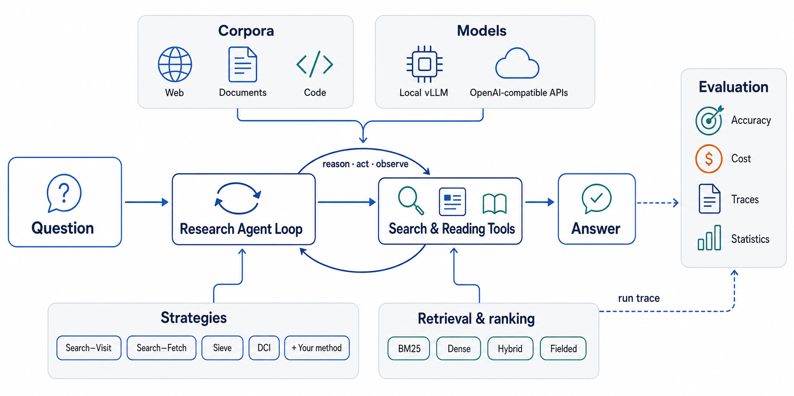
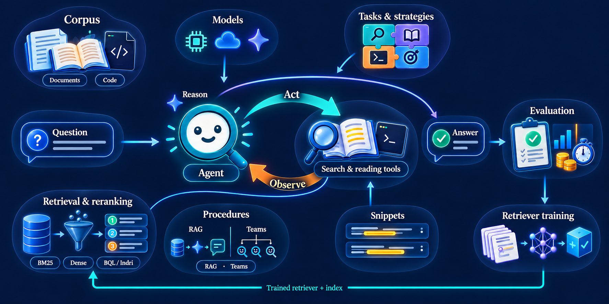

Deep-search agents over your own corpus. Swap the corpus, the retriever, the tools, the backbone or the evaluation. One agent loop, one run record and one evaluation layer stay fixed underneath, so every comparison is like for like.


One fixed setting, with one part swapped per row: the retriever behind the search tool, a reranker over it, or the agent model. Every row runs Search-Visit with a 100-turn budget. Accuracy is the Qwen3-32B judge over all 830 questions. Tokens are per question, each token counted once.
| # | retriever and reranker | acc. (%) | tokens |
|---|---|---|---|
| Loading… | |||
| # | agent | acc. (%) | tokens | |
|---|---|---|---|---|
| Loading… | ||||
One component changes at a time; the rest of the experiment stays fixed. Documents go in, a run record comes out, and the same evaluation layer reads every strategy's output the same way.
Documents become units: an id, a title, a body, and optional sections. One dataset registry loads them; a corpus too large for memory is served from disk instead of held in RAM.
agent_search/corpus 02Every retriever indexes once and searches by query. Lucene BM25, dense encoders, BQL's fielded Boolean retrieval and Indri-style structured retrieval share one engine registry per corpus; a hybrid is any of them fused by one method, and a reranked retriever is one of them with a reranker over its pool.
agent_search/retrievers 03A tool is one atomic action with its own declaration and code, and it names the snippet its listing shows. A task is the goal and the answer protocol. A strategy combines tools with options and names its harness. This is where most extension work happens.
docs/EXTENDING.md 04How the model is put to work, one file each: ReAct, the default loop where the model picks each step; one-shot RAG; a plan-and-search team whose members are conditions run as agents. Every harness writes the same record, with every limit measured in tokens.
agent_search/harness 05Every run writes the same record: a full trajectory, its configuration, and its metrics. Metrics, judges and paired statistics all read that one record format, whichever strategy produced it.
agent_search/evaluation 06Every episode is a full trajectory, so it is also training data. Triples with tiered negatives come out of any run directory and train a dense retriever that plugs back in as any strategy's dense model.
docs/TRAINING.mdEach part below is a registered name. Naming it in an experiment file is all it takes to use it.
Four words cover everything you build on top of the library.
One atomic action the agent can call. A tool owns its declaration (the name and description the model sees), its code (a run function that returns text, never an exception), and, when it needs one, a manual rendered into the prompt.
The goal and the answer protocol: the prompt template, the domain, and the terminal that ends an episode, an <answer>, a <fix>, or a patch.
A named combination of tools with their options and the harness that runs them, or a retrieval-only floor.
agent_search/strategiesA task paired with a strategy. What a run names, what a config file's strategy and dataset keys resolve to, what the run record carries.
a search that lists documents, then visits the whole document
one search that returns the full text of its hits
a search that lists structure, then fetches one section
Boolean candidate filtering, one ranking model, result cards, section fetch
Indri-QL retrieval with cards and section fetch
shell commands over the exported corpus
ITER's search, the standard top ten or with already-listed documents dropped, then a document read by id
Boolean code search or grep, then read a function and commit a fix
rank once, put the top documents in one prompt, one model call
rank once, no agent loop, no model
Backbones are served through four providers: OpenAI's chat and reasoning models, Gemini, any OpenAI-compatible server, and vLLM running in-process. Every one of them emits the same tool-call text the loop parses, so swapping the backbone is one YAML key.
One experiment is one file. The first command runs a scripted policy against a three-document fixture with no API key and no GPU. The second names a real model. You can also call the library from Python with your own documents.
# install and run, no model, no GPU python -m pip install -e ".[api]" skimsearchagent run configs/fixtures/smoke_doc_fixture_sieve_bm25.yaml # the same run, with a real model export OPENAI_API_KEY=... skimsearchagent run configs/fixtures/doc_fixture_sieve_bm25_gpt4omini.yaml
# or call it from Python, with your own documents
from agent_search import research
docs = [{"_id": "d1", "title": "Treaty of Guadalupe Hidalgo",
"text": "The Treaty of Guadalupe Hidalgo ended the Mexican-American War in 1848."}]
result = research("Which treaty ended the Mexican-American War?", docs,
strategy="sieve_bm25", model="gpt-4o-mini")
print(result.answer, result.ranking, result.usage)
Every extension point is a small class in one file. Here is a tool that looks documents up by title, a strategy that offers only that tool, and a condition that runs it. No edits anywhere else in the codebase.
# a tool, a strategy, a condition from agent_search.tools.base import Tool from agent_search.strategies.base import Strategy, register_strategy from agent_search.strategies.conditions import condition class TitleLookup(Tool): name = "title_lookup" description = "Documents whose title contains the words." parameters = {"type": "object", "properties": {"words": {"type": "string"}}, "required": ["words"]} def run(self, args): # self.units, self.ubyid, self.state, self.engine[...] hits = [u for u in self.units if all(w in (u.title or "").lower() for w in args["words"].lower().split())] self.state.seen.update(u.doc_id for u in hits) # first-seen order = the agent's ranking return "\n".join(f"{u.doc_id} {u.title}: {u.body}" for u in hits) or "no match" register_strategy(Strategy(name="title_only", description="look up by title", tools=(TitleLookup(name="title_lookup"),))) condition("title_agent", task="research", strategy="title_only") # run it: strategy=title_agent
Two research projects are developed on the library. Each has its own page with its method, results and citation.
Boolean-filtered search for deep-research agents: fielded candidate selection, one ranking model, compact result cards with query-biased snippets, and reading one section instead of a whole document.
Sieve page arXiv 2608.27912, cs.IRA dense retriever trained from search-agent trajectories. It conditions on the agent's earlier searches and returns documents the agent hasn't read yet.
ITER page